jenkins+Gitlab持续集成前端项目实践
安装插件
由于相关项目在gitLab上管理因此需要安装相关插件：
Git plugin
GitLab Plugin
Publish Over FTP
NodeJS Plugin
部署jenkins的机器如果有网络可通过jenkins管理界面直接安装： 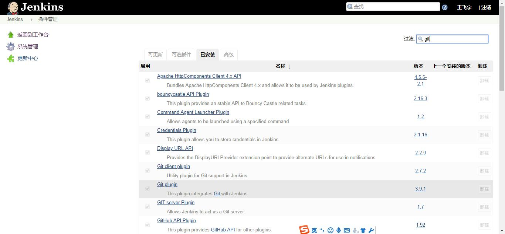
全局配置
git配置
在系统管理–全局工具配置界面，配置git环境变量 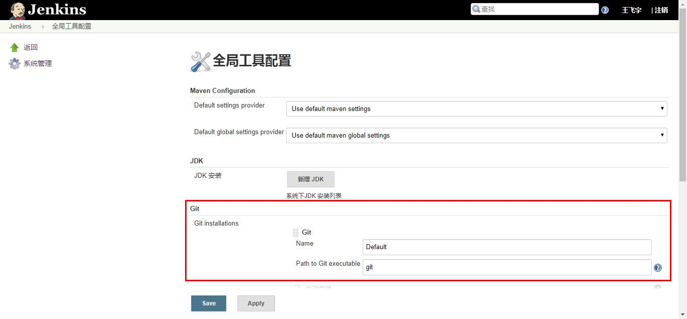
Path to Git executable这里会从环境变量的配置中找git，找不到会提示： 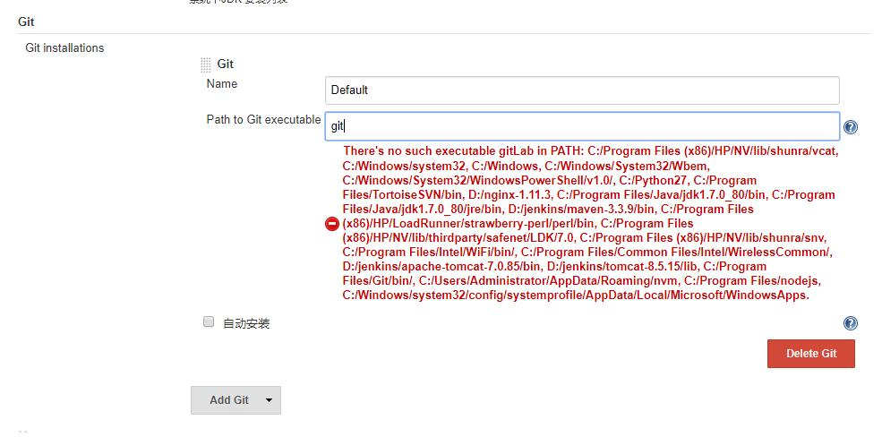
填写完整路径也可以识别，但是在执行打包命令时会出现问题；
FTP配置
在系统管理–全局工具配置界面，配置FTP信息，配置用于构建完成后执行FTP操作的主机； 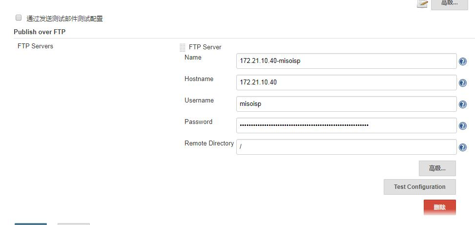
邮件配置
配置邮件通知，当构建失败后，通知项目相关人员 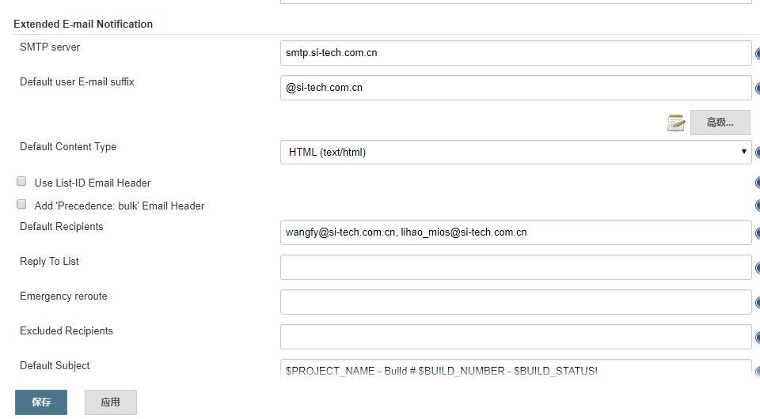
nodejs配置
执行构建的命令需要借助nodejs 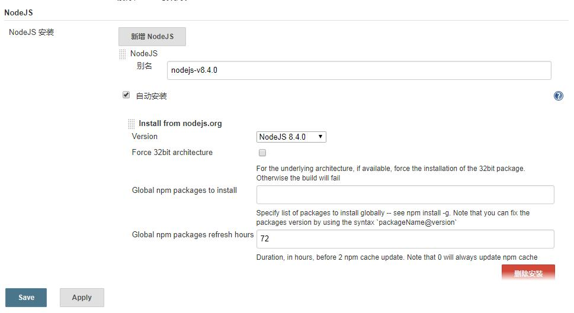
配置一个构建流程
新建任务选择，构建一个自由风格的软件项目 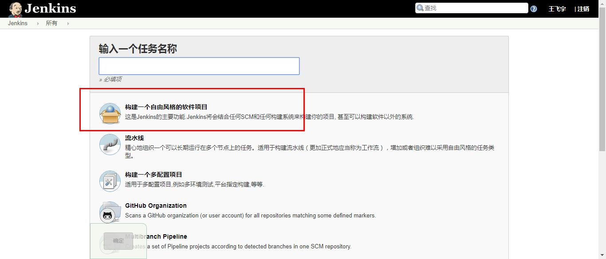
源码管理
源码管理采用Git 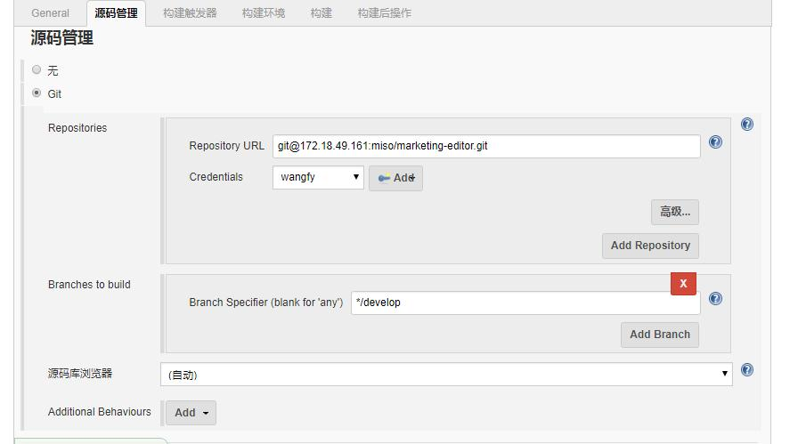
构建环境
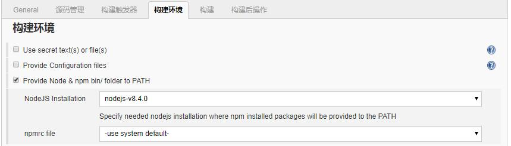
构建
部署jenkins的机器是windows系统，因此这里选择执行windows批处理命令； 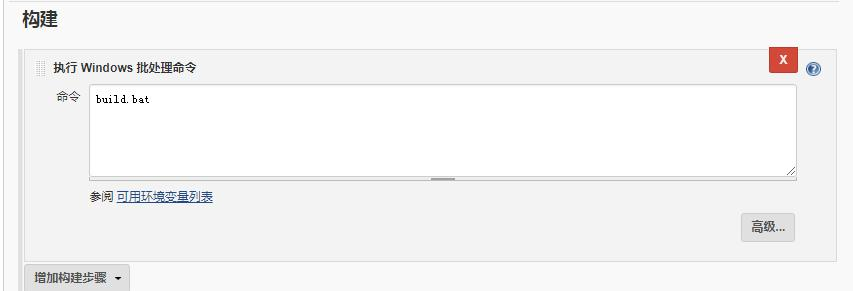
构建后操作
构建后操作有两步
收件人配置
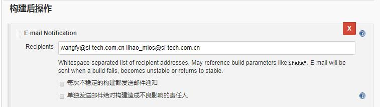
FTP任务
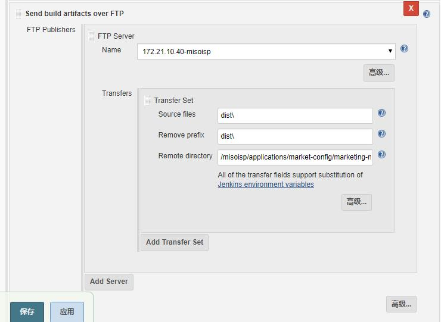
配置完成，现在我在执行上线操作，只需要登录jenkins的选择指定的项目，执行构建即可，构建过程也可以在页面中看到； 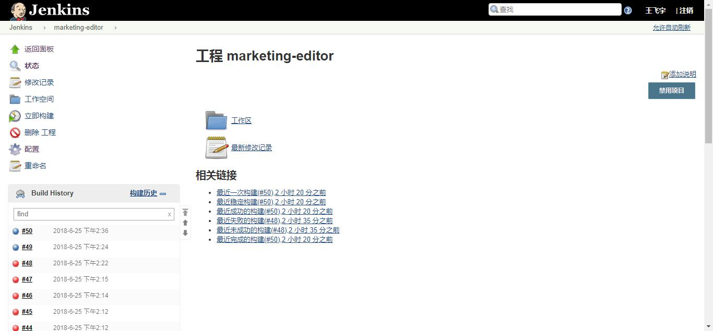 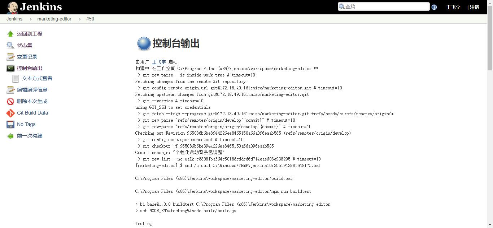
来看看jenkins替代了多少操作： 1、从git上develop分支下载最新的代码； 2、执行构建操作，实际上就是执行npm run build 3、FTP到指定主机的指定目录；
实际上，jenkins可以做的更多；集成gitlab的插件，在gitlab中配置webhook后，回调jenkins执行持续集成，那么只要在指定分支上执行push操作后，就会自动执行持续集成操作；
山西现场由于网络原因，jenkins和gitlab部署的主机网络不通，gitLab回调无法请求到jenkins，只能作罢；
部署集成环境遇到的坑：
1、git要配置环境变量，否则执行构建时会提示找不到命令； 2、首次配置需要在jenkins下载的项目中，先执行npm install，安装好相关模块； 3、需要在jenkins中安装nodejs插件，否则即使主机上安装有nodejs和npm也无法执行npm命令